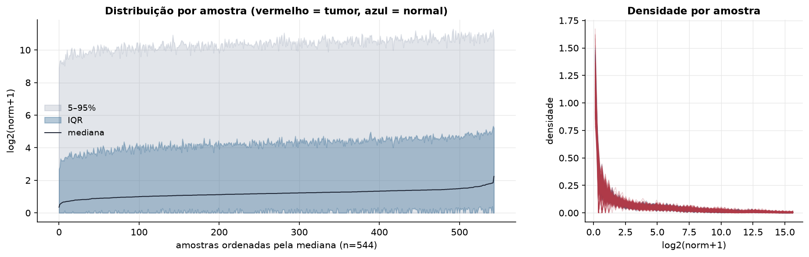
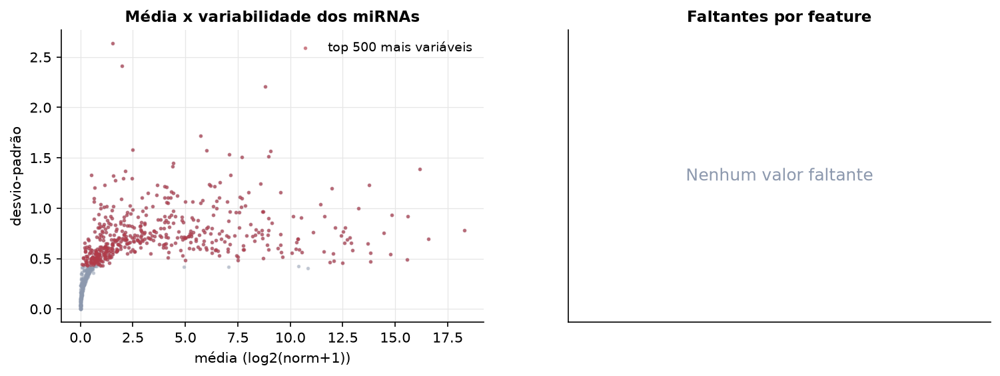
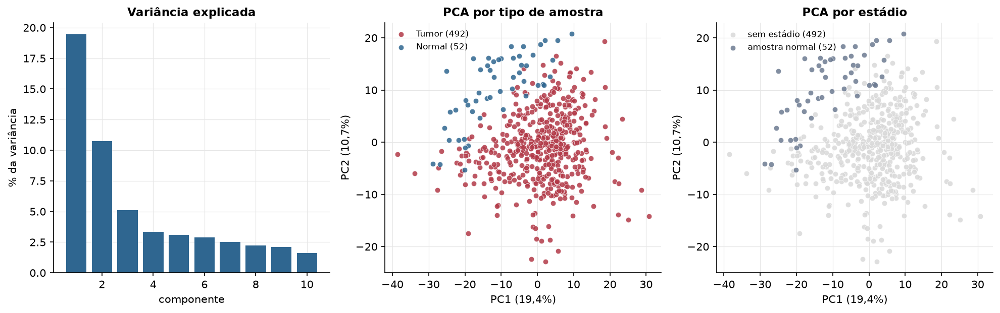
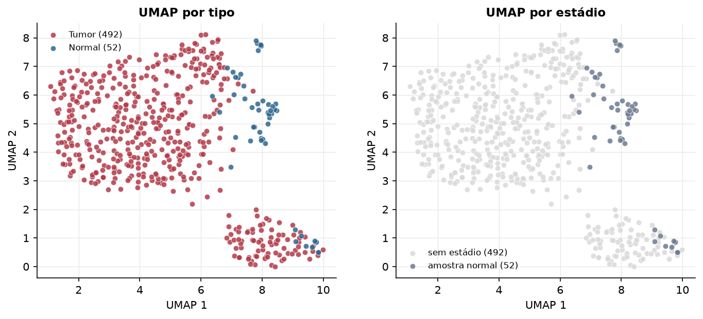
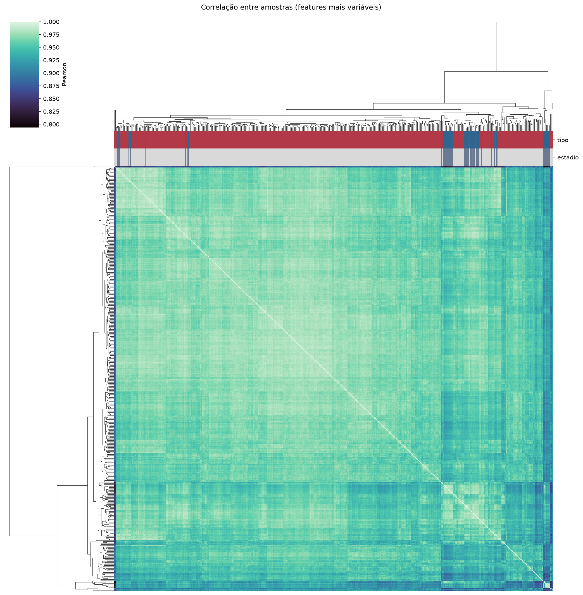
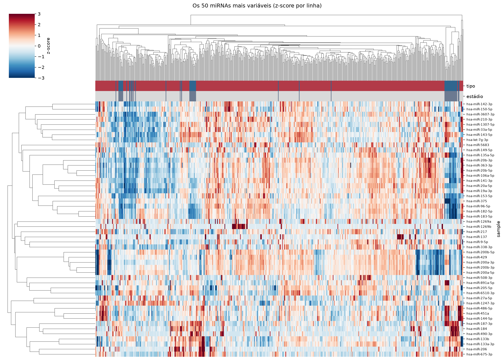
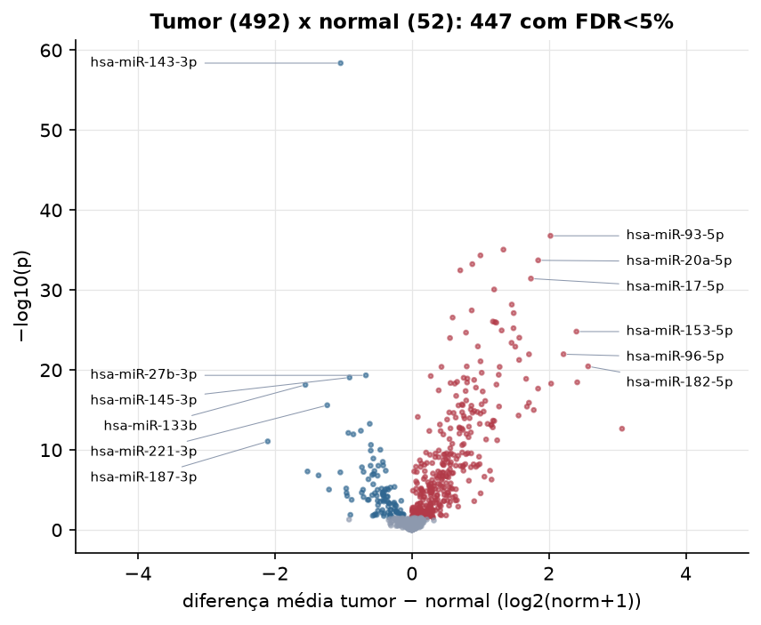
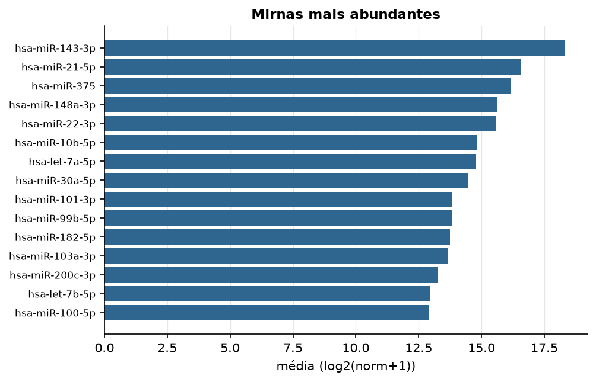

PRAD · miRNA-seq (PanCanAtlas)
miRNA maduro, normalizado e corrigido por lote (EB), log2(x+1) · gerado em 22/10/2026 03:05
743miRNAs
492amostras tumorais
52amostras normais
0,0%valores faltantes
Fonte: PanCanAtlas (pancanMiRs_EBadjOnProtocolPlatformWithoutRepsWithUnCorrectMiRs_08_04_16.xena)
Fita madura (5p/3p) já normalizada. As contagens brutas por precursor estão no relatório de contagens.
Principais resultados
- 743 miRNAs medidos em 544 amostras (492 tumorais e 52 normais); 0,0% dos valores estão faltando.
- Os dois primeiros componentes principais explicam 19,4% e 10,7% da variância das features mais variáveis.
- Correlação mediana entre amostras: 0,96.
- Amostras com correlação muito abaixo das demais (possíveis outliers técnicos): TCGA-G9-6369-01, TCGA-EJ-7123-11, TCGA-HC-7740-11, TCGA-HC-7747-11, TCGA-HC-7738-11, TCGA-HC-7211-11, TCGA-EJ-7783-11, TCGA-HC-7737-11, TCGA-HC-8258-11, TCGA-FC-A4JI-01.
- Tumor x normal: 447 miRNAs diferentes com FDR < 5% (343 maiores no tumor, 104 maiores no normal; 52 pacientes têm o par tumor-normal).
- Mais aumentados no tumor: hsa-miR-93-5p, hsa-miR-3074-5p, hsa-miR-92a-1-5p, hsa-miR-20a-5p, hsa-miR-615-3p, hsa-miR-3651, hsa-miR-17-5p, hsa-miR-20a-3p.
- Mais reduzidos no tumor: hsa-miR-143-3p, hsa-miR-27b-3p, hsa-miR-145-3p, hsa-miR-133b, hsa-miR-221-3p, hsa-miR-152-3p, hsa-miR-338-5p, hsa-miR-222-3p.
- Associações clínicas com p < 0,05 nos componentes principais: PC2 com idade (p=0.028).
Distribuição dos valores


Estrutura das amostras




Tumor x normal

Features mais diferentes entre tumor e normal
| sample | diferenca_tumor_menos_normal | t | p | fdr |
|---|---|---|---|---|
| hsa-miR-143-3p | -1.04 | -22.718 | 4.18e-59 | 3.08e-56 |
| hsa-miR-93-5p | 2.024 | 23.269 | 1.65e-37 | 6.07e-35 |
| hsa-miR-3074-5p | 1.338 | 18.624 | 8.86e-36 | 2.17e-33 |
| hsa-miR-92a-1-5p | 1.002 | 17.273 | 4.7e-35 | 8.64e-33 |
| hsa-miR-20a-5p | 1.845 | 19.994 | 1.92e-34 | 2.83e-32 |
| hsa-miR-615-3p | 0.883 | 15.857 | 5.75e-34 | 7.05e-32 |
| hsa-miR-3651 | 0.707 | 14.302 | 3.45e-33 | 3.63e-31 |
| hsa-miR-17-5p | 1.739 | 19.367 | 3.68e-32 | 3.38e-30 |
| hsa-miR-20a-3p | 1.202 | 17.351 | 8.52e-31 | 6.97e-29 |
| hsa-miR-92a-3p | 1.459 | 18.428 | 6.61e-29 | 4.86e-27 |
| hsa-miR-3648 | 0.874 | 14.286 | 3.53e-28 | 2.36e-26 |
| hsa-miR-500a-3p | 1.487 | 17.483 | 7.63e-28 | 4.68e-26 |
| hsa-miR-4668-3p | 0.595 | 14.277 | 2.78e-27 | 1.57e-25 |
| hsa-miR-5586-5p | 1.184 | 16.289 | 8.7e-27 | 4.58e-25 |
| hsa-miR-103a-3p | 1.213 | 17.549 | 1.03e-26 | 5.04e-25 |
| hsa-miR-342-3p | 1.233 | 16.679 | 1.2e-26 | 5.52e-25 |
| hsa-miR-25-3p | 1.484 | 17.651 | 5.95e-26 | 2.58e-24 |
| hsa-miR-7-1-3p | 1.311 | 15.784 | 1.14e-25 | 4.64e-24 |
| hsa-miR-153-5p | 2.403 | 16.188 | 1.57e-25 | 6.08e-24 |
| hsa-miR-592 | 0.791 | 12.132 | 2.11e-25 | 7.75e-24 |
| hsa-miR-153-3p | 1.569 | 15.374 | 9.23e-25 | 3.24e-23 |
| hsa-miR-4449 | 0.557 | 11.662 | 9.96e-25 | 3.33e-23 |
| hsa-miR-708-5p | 1.456 | 14.979 | 4.05e-24 | 1.29e-22 |
| hsa-miR-151a-5p | 0.964 | 14.567 | 1.13e-23 | 3.47e-22 |
| hsa-miR-708-3p | 1.51 | 15.406 | 1.21e-23 | 3.57e-22 |
| hsa-miR-96-5p | 2.215 | 15.375 | 1.06e-22 | 2.97e-21 |
| hsa-miR-425-5p | 1.711 | 14.811 | 1.09e-22 | 2.97e-21 |
| hsa-miR-19b-3p | 1.566 | 13.915 | 5.56e-22 | 1.46e-20 |
| hsa-miR-17-3p | 1.003 | 13.584 | 8.3e-22 | 2.11e-20 |
| hsa-miR-182-5p | 2.574 | 14.732 | 3.5e-21 | 8.51e-20 |
Associação com variáveis clínicas
p-valores da associação dos três primeiros componentes principais (só tumores) com estádio (Kruskal-Wallis), sexo (Mann-Whitney), idade (Spearman) e sobrevida global (Cox univariado).
| estádio (Kruskal) | sexo (Mann-Whitney) | idade (Spearman) | sobrevida OS (Cox) | |
|---|---|---|---|---|
| PC1 (18,2%) | 0.244 | 0.272 | ||
| PC2 (9,4%) | 0.028 | 0.181 | ||
| PC3 (5,4%) | 0.743 | 0.587 |
Mais abundantes
